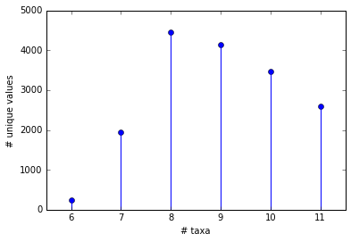
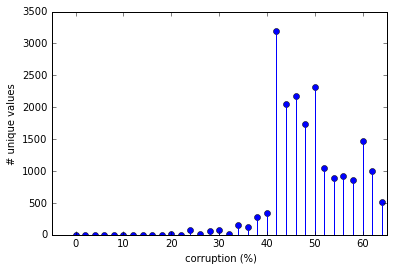
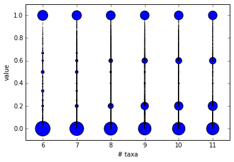
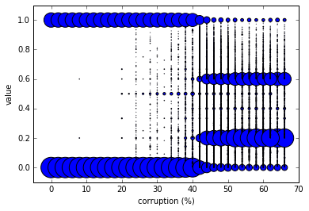
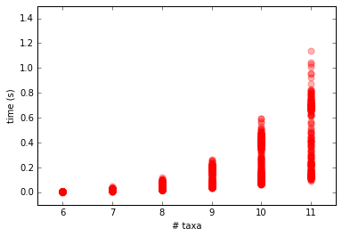
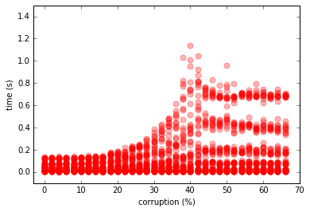
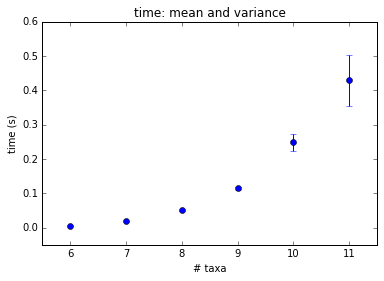
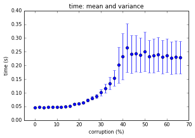
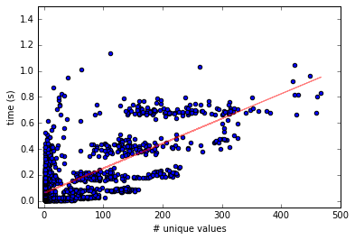

Experimental Setup
A grid of (#taxa, %corruption) configurations is explored. Each configuration is tested 10 times, each time with a
randomly generated tree.
Taxa: [6, 7, 8, 9, 10, 11]
Corruption: [0.00, 0.02, 0.04, ... ,0.64, 0.66]
In each run, a set of rooted triplets is extracted from the randomly generated tree.
The set contains every triplet that is present in the tree (and is thereby dense). This set of rooted triplets is then
corrupted, where X% corruption means that X% of the triplets change with equal chance from a,b|c to either a,c|b or b,c|a.
Raw Data
Jupyter Notebook
(Source/
HTML)
Histograms for every run
Histograms
(These are from an older experiment with less granularity in the corruption dimension)
Each row shows all repetitions for one configuration.
Histogram titles follow the format "t11_c40_4", meaning 11 taxa, 40% corruption, repetition #4.
Horizontal axes show the values the decision variables take. Vertical axes show frequencies of these values.
Number of Unique Values
Here, the number of unique values the decision variables take are explored with respect to the number of taxa
and the amount of corruption. To handle numerical inaccuracies, two values are treated as equivalent if they are identical
up to the first 4 decimal places.
 
Unique Values and their Frequencies
Each circle represents a unique value. The size of the circle is determined by how frequently this value occurs.
 
Running Time
 
Time Stats
Means are represented by circles and variances are represented by error bars.

#Unique Values Vs Time
Red: OLS regression line

{kind=link}